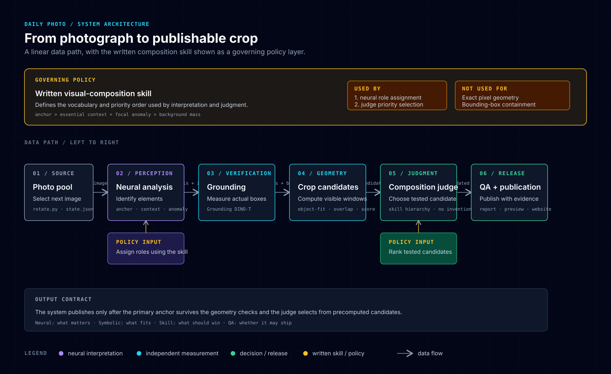

<meta charset="utf-8">
<meta name="viewport" content="width=device-width, initial-scale=1">
<meta name="description" content="A learning journey through the pivots, failures, and architecture behind a local neural-symbolic daily photo pipeline.">
<meta name="author" content="Karl and Shubham Mehrish">
<meta name="category" content="AI &amp; Mind">
<title>The Daily Photo Pipeline: A Learning Journey Through Pivots and Refutations</title>
<style>
:root{--blue:#0071e3;--bright:#2997ff;--purple:#af52de;--cyan:#22d3ee;--green:#34c759;--amber:#fbbf24;--ink:#1d1d1f;--muted:rgba(29,29,31,.66);--light:#f5f5f7;--white:#fff;--dark:#000;--card:#1c1c1e;--border:rgba(0,0,0,.1);--font:system-ui,-apple-system,BlinkMacSystemFont,"Segoe UI",sans-serif;--mono:ui-monospace,SFMono-Regular,Menlo,Monaco,Consolas,monospace}
*{box-sizing:border-box;margin:0;padding:0;-webkit-font-smoothing:antialiased}body{font-family:var(--font);background:var(--light);color:var(--ink);line-height:1.58;letter-spacing:-.012em}section{display:flex;justify-content:center;padding:82px 22px}.container{width:100%;max-width:820px}.dark{background:#000;color:#fff}.white{background:#fff}.light{background:var(--light)}.hero{padding-top:94px;padding-bottom:68px}.back-link{display:inline-flex;color:var(--bright);text-decoration:none;font-size:14px;font-weight:650;margin-bottom:44px}.back-link:hover{text-decoration:underline}.draft{display:inline-block;border:1px solid rgba(41,151,255,.55);border-radius:99px;padding:7px 12px;color:var(--bright);font-size:11px;font-weight:750;letter-spacing:.08em;text-transform:uppercase;margin-bottom:24px}.overline{text-transform:uppercase;color:var(--bright);letter-spacing:.14em;font-size:12px;font-weight:750;margin-bottom:15px}h1{font-size:clamp(42px,7vw,68px);line-height:1.02;letter-spacing:-.052em;font-weight:680;max-width:790px;text-wrap:pretty}.subtitle{color:rgba(255,255,255,.68);font-size:21px;line-height:1.42;max-width:700px;margin-top:24px}.meta{display:flex;flex-wrap:wrap;gap:28px;margin-top:44px;padding:20px 0;border-top:1px solid rgba(255,255,255,.17);border-bottom:1px solid rgba(255,255,255,.17);color:rgba(255,255,255,.66);font-size:14px}.meta strong{display:block;color:#fff;text-transform:uppercase;letter-spacing:.07em;font-size:10px;margin-bottom:4px}.abstract-wrap{padding-top:44px;padding-bottom:44px}.abstract{background:#fff;border:1px solid var(--border);border-radius:16px;padding:31px 34px;box-shadow:0 12px 34px rgba(0,0,0,.045)}.abstract-label{color:var(--blue);text-transform:uppercase;letter-spacing:.1em;font-size:12px;font-weight:750;margin-bottom:14px}.abstract p{font-size:19px;line-height:1.55;color:rgba(29,29,31,.84)}h2{font-size:34px;line-height:1.1;letter-spacing:-.035em;font-weight:680;margin-bottom:23px}h3{font-size:22px;line-height:1.2;margin:35px 0 12px}p{font-size:17px;margin-bottom:21px}strong{font-weight:720}em{font-style:italic}.callout{border-left:3px solid var(--blue);padding:3px 0 3px 20px;margin:31px 0;color:var(--blue);font-size:19px;font-style:italic}.dark .callout{border-color:var(--bright);color:var(--bright)}.quote{border-left:3px solid rgba(0,113,227,.55);padding-left:20px;margin:29px 0;color:var(--muted);font-style:italic}.contrast-grid{display:grid;grid-template-columns:repeat(2,1fr);gap:18px;margin-top:34px}.contrast-card{border-radius:14px;padding:25px;background:var(--light);border:1px solid var(--border)}.dark .contrast-card{background:var(--card);border-color:rgba(255,255,255,.1)}.contrast-card h3{margin:0 0 10px;font-size:20px}.contrast-card p{font-size:15.5px;color:var(--muted);margin:0}.dark .contrast-card p{color:rgba(255,255,255,.68)}.contrast-card.neural{border-top:3px solid var(--purple)}.contrast-card.symbolic{border-top:3px solid var(--blue)}.skill-list{display:grid;grid-template-columns:repeat(3,1fr);gap:14px;margin:31px 0}.skill-item{background:var(--card);color:#fff;border-radius:12px;padding:19px}.skill-item strong{display:block;color:var(--bright);font-size:14px;margin-bottom:6px}.skill-item span{font-size:14px;color:rgba(255,255,255,.7)}.figure{margin:36px 0 12px}.figure img{display:block;width:100%;height:auto;border-radius:15px;box-shadow:0 15px 40px rgba(0,0,0,.13)}.figure figcaption{font-size:13px;color:var(--muted);margin-top:11px;line-height:1.45}.dark .figure figcaption{color:rgba(255,255,255,.58)}.architecture{margin:34px 0 10px;background:#020617;border-radius:16px;padding:12px;box-shadow:0 18px 45px rgba(0,0,0,.22)}.architecture img{display:block;width:100%;height:auto;border-radius:10px}.architecture figcaption{font-size:13px;color:rgba(255,255,255,.62);padding:12px 10px 3px}.data-table{width:100%;border-collapse:collapse;margin:27px 0 10px;font-size:14px}.data-table th{text-align:left;color:var(--muted);font-size:11px;text-transform:uppercase;letter-spacing:.08em;border-bottom:1px solid var(--border);padding:10px}.data-table td{border-bottom:1px solid var(--border);padding:13px 10px;vertical-align:top}.data-table code{font-family:var(--mono);font-size:12px;color:var(--blue)}code{font-family:var(--mono);font-size:.88em;color:var(--blue)}pre{background:#f0f0f2;border-radius:11px;padding:19px 21px;overflow:auto;margin:21px 0 25px;font-family:var(--mono);font-size:13px;line-height:1.65;color:#353539}.dark pre{background:#1c1c1e;color:#d8d8dc}.lesson{background:linear-gradient(135deg,#eef6ff 0%,#fff 100%);border-top:1px solid rgba(0,113,227,.1)}.lesson-text{font-size:24px;line-height:1.4;letter-spacing:-.025em}footer{padding:50px 22px;text-align:center;color:var(--muted);font-size:13px;border-top:1px solid var(--border)}footer p{font-size:13px;margin-bottom:8px}footer a{color:var(--blue);text-decoration:none}footer a:hover{text-decoration:underline}
@media(max-width:680px){section{padding:58px 18px}.hero{padding-top:64px}.back-link{margin-bottom:34px}.subtitle{font-size:18px}.meta{gap:18px 24px}.abstract{padding:24px}.abstract p{font-size:17px}h2{font-size:29px}p{font-size:16px}.contrast-grid,.skill-list{grid-template-columns:1fr}.architecture{margin-left:-4px;margin-right:-4px;padding:7px}.lesson-text{font-size:21px}.data-table{font-size:12px}.data-table th,.data-table td{padding:10px 6px}}
</style>


<section class="dark hero"><div class="container">
<a class="back-link" href="index.html">← Back to Briefing</a><div class="draft">Draft · not published</div><div class="overline">AI &amp; Mind</div>
<h1 data-sync-id="sync-0">The Daily Photo Pipeline: A Learning Journey Through Pivots and Refutations</h1>
<p class="subtitle" data-sync-id="sync-1">A small photography project became a record of how better explanations emerge: through failed crops, hallucinated scenes, model changes, skill updates, geometry, and criticism.</p>
<div class="meta"><div><strong>Authors</strong>Karl and Shubham Mehrish</div><div><strong>Version</strong>Learning journey</div><div><strong>Read time</strong>15 min</div><div><strong>Status</strong>Local draft</div></div>
</div></section>
<section class="light abstract-wrap"><div class="container"><div class="abstract"><div class="abstract-label">In brief</div><p data-sync-id="sync-2">When a wide photograph is placed on a tall phone screen, most of its horizontal content disappears. The daily photo pipeline learned to decide what should survive by combining neural perception, symbolic geometry, a written composition skill, independent grounding, display-aware profiles, graceful fallbacks, and explicit quality gates. The result is not an AI oracle. It is a chain of conjectures, measurements, criticisms, and evidence.</p></div></div></section>
<section class="white"><div class="container body-copy"><h2 data-sync-id="sync-3">The problem</h2><p data-sync-id="sync-4">Every morning, one photograph from my collection appears on a small web page designed for my phone. Most source photographs are landscape images. The target display is a tall, narrow portrait screen. On an iPhone 17 Pro portrait viewport—402 × 874 CSS pixels—only about <strong>30.6% of a typical 3:2 source photograph's width</strong> is visible with <code>object-fit: cover</code>.</p><p data-sync-id="sync-5">The question is not simply how to resize the photograph. It is:</p><div class="callout">Which part of this photograph is the photograph?</div><p data-sync-id="sync-6">A person at the edge, a dog running through snow, a boy reaching toward the camera, a distant tower, or a bright horizon can all be lost by a careless crop. This project became a record of how each failure forced a better explanation.</p><h3 data-sync-id="sync-7">The design constraints</h3><p data-sync-id="sync-8">The system had to be local-first, inexpensive, reliable enough for an unattended 6:30 AM run, aware of portrait and landscape geometry, explicit about uncertainty, and auditable after the fact. Most importantly, it had to preserve the photograph's identity before adding context or drama.</p></div></section>
<section class="light"><div class="container body-copy"><div class="overline">Pivot One</div><h2 data-sync-id="sync-9">From centre-cropping to visual weight</h2><h3 data-sync-id="sync-10">The initial conjecture</h3><p data-sync-id="sync-11">The first implementation used a conventional centred crop. The assumption was simple: the middle of the frame is probably important enough.</p><h3 data-sync-id="sync-12">The refutation</h3><p data-sync-id="sync-13">A centre crop is blind to composition. It can remove an edge subject, preserve empty sky while losing a person, and turn a photograph with a clear subject into anonymous texture.</p><h3 data-sync-id="sync-14">The improved explanation</h3><p data-sync-id="sync-15">The system needed a notion of <strong>visual weight</strong>: the different pull exerted by faces, people, animals, sharp edges, colour, contrast, isolation, scale, complexity, repetition, and placement.</p><pre>primary anchor &gt; essential context &gt; focal anomaly &gt; background mass</pre><p data-sync-id="sync-16">This became the beginning of the <code>visual-composition-weight</code> skill. The anchor gives the photograph its identity. Context explains it. An anomaly may add narrative energy. A crowd or texture may be large in pixel terms while remaining secondary.</p></div></section>
<section class="white"><div class="container body-copy"><div class="overline">Pivot Two</div><h2 data-sync-id="sync-17">From a mathematical centroid to a dual-core decision</h2><h3 data-sync-id="sync-18">The second conjecture</h3><p data-sync-id="sync-19">Perhaps the crop could simply be centred on mathematical visual weight. The pipeline reduced each image to a small grid:</p><pre>weight = 0.5 × local contrast
       + 0.3 × colour saturation
       + 0.2 × unusual luminance</pre><h3 data-sync-id="sync-20">The refutation</h3><p data-sync-id="sync-21">The centroid does not understand meaning. A bright sky can outweigh a small dark figure; a reflection can outweigh the object reflected; a luminous window can become the centre while the person beside it is the subject.</p><h3 data-sync-id="sync-22">The improved explanation</h3><p data-sync-id="sync-23">The centroid became a <strong>quantitative anchor</strong>, not the final editor. Neural intelligence asks what might matter. Symbolic intelligence asks what can actually fit. The final crop comes from their criticism of one another.</p><div class="contrast-grid"><div class="contrast-card neural"><h3 data-sync-id="sync-24">Neural intelligence</h3><p data-sync-id="sync-25">Meaning, subjects, roles, story, and likely visual anchors.</p></div><div class="contrast-card symbolic"><h3 data-sync-id="sync-26">Symbolic intelligence</h3><p data-sync-id="sync-27">Visible windows, bounding boxes, overlap, scoring, and rejection.</p></div></div></div></section>
<section class="dark"><div class="container body-copy"><div class="overline">Pivot Three</div><h2 data-sync-id="sync-28">From one cloud vision call to local-first analysis</h2><h3 data-sync-id="sync-29">The “Poppy &amp; Tequila” blindspot</h3><p data-sync-id="sync-30">Early attempts used a cloud vision tool directly on local photographs. The failures were dramatic because they were plausible. A large Battery Park photograph was described successively as a red poppy, a wet street with an umbrella, a woman in an orange sweater, and a tequila bottle. The actual image showed a bar table, boats, the Hudson, and a New Jersey skyscraper.</p><p data-sync-id="sync-31">A 37 MB source became a Base64 payload over 50 MB. Static temporary paths triggered caching. Local paths could fail silently at the cloud boundary. And the model still generated fluent prose when it had no evidence.</p><p data-sync-id="sync-32">The system moved toward local analysis. macOS <code>sips</code> creates small, unique, cache-busting derivatives. The skill was updated with rules about payload limits, path caching, filename priming, data-URL fallbacks, and the requirement to inspect pixels before interpreting themes.</p><div class="callout">A fluent observation is not evidence of observation.</div></div></section>
<section class="light"><div class="container body-copy"><div class="overline">Pivot Four</div><h2 data-sync-id="sync-33">From the first local model to bounded model roles</h2><p data-sync-id="sync-34">The earliest local architecture used <strong>Llava 7B</strong> for qualitative scene analysis and <strong>Qwen2.5-Coder 32B</strong> as a composition judge. Keeping the image local was a major improvement, but the small vision model was still being asked to provide both meaning and rough spatial estimates.</p><p data-sync-id="sync-35">The pipeline moved through <strong>Qwen2.5-VL</strong> and toward <strong>Qwen3-VL:8B</strong> for stronger structured scene interpretation, with <strong>Qwen3:32B</strong> judging text-based candidates. The important change was not merely a better model name. It was a better division of responsibility.</p><p data-sync-id="sync-36">The vision model proposes semantic roles—<code>primary_anchor</code>, <code>context</code>, <code>focal_anomaly</code>, and <code>background_mass</code>—with confidence and approximate location. It no longer invents the final CSS coordinate. The judge reviews structured candidates instead of improvising over raw pixels.</p></div></section>
<section class="white"><div class="container body-copy"><div class="overline">Pivot Five</div><h2 data-sync-id="sync-37">From guessed boxes to independent grounding</h2><p data-sync-id="sync-38">A bounding box does not become a measurement merely because it appears in JSON. This became especially important when portrait anchors were misplaced or too large to fit the narrow viewport.</p><p data-sync-id="sync-39">The pipeline introduced <strong>Grounding DINO-T</strong> as an independent localization stage:</p><pre>Qwen3-VL:8B → proposes labels and roles
Grounding DINO-T → finds the actual boxes
Crop geometry → computes visible windows
Qwen3:32B → chooses tested candidates
QA gate → decides whether the result may ship</pre><p data-sync-id="sync-40">The vision model proposes what to look for. The detector searches for it. Disagreement becomes useful evidence rather than a hidden failure.</p><div class="quote">Let one system make a useful conjecture, but let a different mechanism test its physical consequence.</div></div></section>
<section class="light"><div class="container body-copy"><div class="overline">Pivot Six</div><h2 data-sync-id="sync-41">From one crop coordinate to display-aware profiles</h2><p data-sync-id="sync-42">The first crop logic implicitly targeted an iPhone 13 mini: 375 × 812. It was replaced with configurable iPhone 17 Pro profiles:</p><pre>portrait:  402 × 874
landscape: 874 × 402</pre><p data-sync-id="sync-43">A crop coordinate is not an intrinsic property of the source image. It describes how the source interacts with a display. For landscape sources, portrait mode makes X critical while landscape mode makes Y critical.</p><p data-sync-id="sync-44">The engine therefore creates separate candidates: anchor only; anchor plus context; anchor plus anomaly; and all three together. The visible source window is calculated from the actual <code>object-fit: cover</code> overflow and checked against measured boxes.</p><figure class="figure"><figcaption data-sync-id="sync-45"><strong>Sunset:</strong> blue shows the narrow portrait window; orange shows the wider landscape window. The source is unchanged, but the critical crop axis changes with the display.</figcaption></figure><figure class="figure"><figcaption data-sync-id="sync-46"><strong>Running dog:</strong> the revised blue portrait window is shifted and widened to preserve more of the moving anchor instead of spending scarce width on snow.</figcaption></figure></div></section>
<section class="white"><div class="container body-copy"><div class="overline">Pivot Seven</div><h2 data-sync-id="sync-47">From “valid crop” to anchor-preserving fallback</h2><p data-sync-id="sync-48">A candidate can be technically valid while being photographically wrong. Conversely, an oversized subject can make full containment mathematically impossible even though a meaningful crop is still possible.</p><p data-sync-id="sync-49">Testing an image with oversized stacked kayaks showed that treating failed full containment as an automatic abort was too rigid. The fallback logic was refined:</p><div class="skill-list"><div class="skill-item"><strong>anchor_priority</strong><span>Preserve the complete anchor when context cannot fit.</span></div><div class="skill-item"><strong>anchor_center</strong><span>When the anchor is wider than the viewport, centre on its visual midpoint and accept partial containment.</span></div><div class="skill-item"><strong>hard failure</strong><span>Stop only when no meaningful anchor-preserving crop can be produced.</span></div></div><p data-sync-id="sync-50">The purpose of the crop is to preserve identity, not to satisfy a containment predicate at any cost.</p><figure class="figure"><figcaption data-sync-id="sync-51"><strong>This morning's run:</strong> The primary anchor is the boy reaching toward the camera; the crop must preserve his face, body, outstretched arm, and enough wet sand to explain the movement.</figcaption></figure></div></section>
<section class="dark"><div class="container body-copy"><div class="overline">Pivot Eight</div><h2 data-sync-id="sync-52">From an agentic cron loop to a script-only runner</h2><p data-sync-id="sync-53">The pipeline was initially run through an LLM-driven cron job. That created an unnecessary failure mode: Hermes launched a multi-turn Qwen3:32B agent just to orchestrate a deterministic local script. GPU pressure became worse around macOS wake-ups.</p><p data-sync-id="sync-54">A separate failure came from Hermes script-path resolution. The scheduler looked for <code>rotate_and_push.sh</code> inside <code>~/.hermes/scripts/</code>, although the real script lived in the repository. The correct wrapper was <code>daily_photo_run.sh</code>.</p><pre>Hermes cron, no_agent=true
        ↓
daily_photo_run.sh
        ↓
rotate_and_push.sh
        ↓
local analysis, QA, commit, push</pre><p data-sync-id="sync-55">The script-only runner removed the unnecessary 32B agent loop, reduced GPU pressure, and made the automation's failure surface explicit.</p></div></section>
<section class="light"><div class="container body-copy"><div class="overline">Pivot Nine</div><h2 data-sync-id="sync-56">From a successful run to an auditable run</h2><p data-sync-id="sync-57">“The script exited with status 0” is not the same as “the photograph was cropped well.” Every run now leaves evidence:</p><ul style="margin:0 0 25px 24px;font-size:17px;line-height:1.8"><li data-sync-id="sync-58"><code>analysis_report.json</code> records centroid, semantic inventory, detector boxes, candidates, profiles, and validation.</li><li data-sync-id="sync-59"><code>qa_summary.md</code> gives a human-readable account.</li><li data-sync-id="sync-60"><code>qa_source_preview.jpg</code> preserves a visual checkpoint.</li><li data-sync-id="sync-61"><code>rotation.log</code> records execution history.</li><li data-sync-id="sync-62">Tests exercise crop geometry and rotation cycles.</li><li data-sync-id="sync-63">A lock and atomic state writes protect unattended runs.</li></ul><p data-sync-id="sync-64">The system is now closer to a laboratory than an oracle. A future mistake can be inspected: what did the model propose, what did the detector measure, what did geometry permit, what did the judge choose, and what did QA approve?</p></div></section>
<section class="white"><div class="container body-copy"><h2 data-sync-id="sync-65">How the visual-composition-weight skill evolved</h2><p data-sync-id="sync-66">The skill began as a synthesis of visual-weight theory and Bryan Peterson's <em>Learning to See</em>. It incorporated nine visual-weight drivers, the Toad's POV, Robin's-Nest POV, and Squirrel's POV, Optical Voice Control, “What if...?” narrative conjectures, and the fulcrum rule for asymmetrical balance.</p><p data-sync-id="sync-67">Real failures turned it into an operational knowledge layer. It gained rules for giant-image downscaling, unique paths and cache busting, separating pixel reality from filenames and conversation, treating crowds as possible texture, using neural models for meaning and symbolic code for geometry, refusing unsupported claims, anchor fallbacks, display context, unattended cron constraints, and documenting failures as reusable knowledge.</p><p data-sync-id="sync-68">The skill is not merely a style guide. It is a record of what the project has learned about seeing, measuring, and being wrong.</p></div></section>
<section class="dark"><div class="container body-copy"><div class="overline">The current architecture</div><h2 data-sync-id="sync-69">From photograph to publishable crop</h2><p data-sync-id="sync-70">The architecture diagram replaces the earlier linear eight-step explanation with a system view. It separates four responsibilities:</p><pre>Neural:   what matters
Symbolic: what fits
Skill:    what should win
QA:       whether it may ship</pre><figure class="architecture"><figcaption data-sync-id="sync-71">The written composition skill is a governing policy layer. The data path remains legible from left to right: Photo pool → Neural analysis → Grounding → Crop candidates → Composition judge → QA + publication.</figcaption></figure><p data-sync-id="sync-72">The diagram is a hard-to-vary explanation because each responsibility has a clear reason to exist. No single component is asked to do what it is bad at.</p></div></section>
<section class="white"><div class="container body-copy"><h2 data-sync-id="sync-73">The learning journey in one table</h2><table class="data-table"><thead><tr><th data-sync-id="sync-74">Pivot</th><th data-sync-id="sync-75">Initial conjecture</th><th data-sync-id="sync-76">Refutation</th><th data-sync-id="sync-77">New explanation</th></tr></thead><tbody><tr><td data-sync-id="sync-78">One</td><td data-sync-id="sync-79">Centre crop is good enough</td><td data-sync-id="sync-80">Edge subjects disappear</td><td data-sync-id="sync-81">Preserve the primary anchor</td></tr><tr><td data-sync-id="sync-82">Two</td><td data-sync-id="sync-83">Pixel centroid identifies importance</td><td data-sync-id="sync-84">Bright negative space dominates</td><td data-sync-id="sync-85">Use math as an anchor, not an editor</td></tr><tr><td data-sync-id="sync-86">Three</td><td data-sync-id="sync-87">Cloud vision can inspect local images</td><td data-sync-id="sync-88">Payload, cache, and blind-input hallucinations</td><td data-sync-id="sync-89">Local-first, downscaled analysis</td></tr><tr><td data-sync-id="sync-90">Four</td><td data-sync-id="sync-91">One local VLM can do everything</td><td data-sync-id="sync-92">Rough boxes and semantic uncertainty</td><td data-sync-id="sync-93">Assign models bounded roles</td></tr><tr><td data-sync-id="sync-94">Five</td><td data-sync-id="sync-95">Model boxes are measurements</td><td data-sync-id="sync-96">Guessed coordinates can be wrong</td><td data-sync-id="sync-97">Ground independently with DINO-T</td></tr><tr><td data-sync-id="sync-98">Six</td><td data-sync-id="sync-99">One crop fits every display</td><td data-sync-id="sync-100">Portrait and landscape expose different axes</td><td data-sync-id="sync-101">Profiles and candidates</td></tr><tr><td data-sync-id="sync-102">Seven</td><td data-sync-id="sync-103">Invalid containment means abort</td><td data-sync-id="sync-104">Oversized anchors can still be meaningful</td><td data-sync-id="sync-105">Anchor-priority and anchor-center fallbacks</td></tr><tr><td data-sync-id="sync-106">Eight</td><td data-sync-id="sync-107">Cron should delegate orchestration</td><td data-sync-id="sync-108">GPU overload and path failure</td><td data-sync-id="sync-109">Script-only wrapper</td></tr><tr><td data-sync-id="sync-110">Nine</td><td data-sync-id="sync-111">Successful execution means quality</td><td data-sync-id="sync-112">Valid crops can still be wrong</td><td data-sync-id="sync-113">Reports, previews, tests, and QA</td></tr></tbody></table></div></section>
<section class="lesson"><div class="container body-copy"><div class="overline">The lesson</div><p class="lesson-text" data-sync-id="sync-114"><strong>The reliable system did not emerge from finding a perfect model. It emerged from assigning each imperfect component a bounded responsibility and making the boundaries testable.</strong></p><p data-sync-id="sync-115">A single LLM call is an oracle. The harness is a laboratory. The skill is the evolving theory. The reports are the memory. The crop is the experiment.</p></div></section>
<footer><p data-sync-id="sync-116">© 2026 Karl's Briefing. Built with the Beginning of Infinity as our guide.</p><p data-sync-id="sync-117"><br></p><p data-sync-id="sync-118"><a href="index.html">Return to the Daily Briefing</a></p></footer>

<!---->
